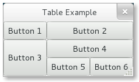
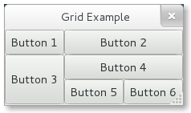

4. Layout Containers¶
While many GUI toolkits require you to precisely place widgets in a window, using absolute positioning, GTK+ uses a different approach. Rather than specifying the position and size of each widget in the window, you can arrange your widgets in rows, columns, and/or tables. The size of your window can be determined automatically, based on the sizes of the widgets it contains. And the sizes of the widgets are, in turn, determined by the amount of text they contain, or the minimum and maximum sizes that you specify, and/or how you have requested that the available space should be shared between sets of widgets. You can perfect your layout by specifying padding distance and centering values for each of your widgets. GTK+ then uses all this information to resize and reposition everything sensibly and smoothly when the user manipulates the window.
GTK+ arranges widgets hierarchically, using containers. They are invisible to the end user and are inserted into a window, or placed within each other to layout components. There are two flavours of containers: single-child containers, which are all descendants of Gtk.Bin, and multiple-child containers, which are descendants of Gtk.Container. The most commonly used are vertical or horizontal boxes (Gtk.Box), tables (Gtk.Table) and grids (Gtk.Grid).
4.1. Boxes¶
Boxes are invisible containers into which we can pack our widgets. When packing widgets into a horizontal box, the objects are inserted horizontally from left to right or right to left depending on whether Gtk.Box.pack_start() or Gtk.Box.pack_end() is used. In a vertical box, widgets are packed from top to bottom or vice versa. You may use any combination of boxes inside or beside other boxes to create the desired effect.
4.1.1. Box Objects¶
- class Gtk.Box([homogenous[, spacing]])¶
The rectangular area of a Gtk.Box is organized into either a single row or a single column of child widgets depending upon whether the “orientation” property is set to Gtk.Orientation.HORIZONTAL or Gtk.Orientation.VERTICAL.
If homogeneous is True, all widgets in the box will be the same size, of which the size is determined by the largest child widget. If it is omitted, homogeneous defaults to False.
spacing is the number of pixels to place by default between children. If omitted, no spacing is used, i.e. spacing is set to 0.
By default, child widgets are organized into a single row, i.e. the “orientation” property is set to Gtk.Orientation.HORIZONTAL.
Gtk.Box uses a notion of packing. Packing refers to adding widgets with reference to a particular position in a Gtk.Container. For a Gtk.Box, there are two reference positions: the start and the end of the box. If “orientation” is Gtk.Orientation.VERTICAL, the start is defined as the top of the box and the end is defined as the bottom. If “orientation” is Gtk.Orientation.HORIZONTAL, the start is defined as the left side and the end is defined as the right side.
- pack_start(child, expand, fill, padding)¶
Adds child to box, packed with reference to the start of box. The child is packed after any other child packed with reference to the start of box.
child should be a Gtk.Widget to be added to this box. The expand argument when set to True allows the child widget to take all available space it can. Alternately, if the value is set to False, the box will be shrunken to the same size as the child widget.
If the fill argument is set to True, the child widget takes all available space and is equal to the size of the box. This only has an effect when expand is set to True. A child is always allocated the full height of a horizontally oriented and the full width of a vertically oriented box. This option affects the other dimension.
padding defines extra space in pixels to put between this child and its neighbours, over and above the global amount specified by “spacing” property. If child is a widget at one of the reference ends of box, then padding pixels are also put between child and the reference edge of this box.
- pack_end(child, expand, fill, padding)¶
Adds child to box, packed with reference to the end of box. The child is packed after (away from end of) any other child packed with reference to the end of box.
Arguments are the same as for pack_start().
- set_homogeneous(homogeneous)¶
If homogeneous is True, all widgets in the box will be the same size, of which the size is determined by the largest child widget.
4.1.2. Example¶
Let’s take a look at a slightly modified version of the extended example with two buttons.

1 2 3 4 5 6 7 8 9 10 11 12 13 14 15 16 17 18 19 20 21 22 23 24 25 26 27 28 | from gi.repository import Gtk
class MyWindow(Gtk.Window):
def __init__(self):
Gtk.Window.__init__(self, title="Hello World")
self.box = Gtk.Box(spacing=6)
self.add(self.box)
self.button1 = Gtk.Button(label="Hello")
self.button1.connect("clicked", self.on_button1_clicked)
self.box.pack_start(self.button1, True, True, 0)
self.button2 = Gtk.Button(label="Goodbye")
self.button2.connect("clicked", self.on_button2_clicked)
self.box.pack_start(self.button2, True, True, 0)
def on_button1_clicked(self, widget):
print "Hello"
def on_button2_clicked(self, widget):
print "Goodbye"
win = MyWindow()
win.connect("delete-event", Gtk.main_quit)
win.show_all()
Gtk.main()
|
First, we create a horizontally orientated box container where 6 pixels are placed between children. This box becomes the child of the top-level window.
self.box = Gtk.Box(spacing=6)
self.add(self.box)
Subsequently, we add two different buttons to the box container.
self.button1 = Gtk.Button(label="Hello")
self.button1.connect("clicked", self.on_button1_clicked)
self.box.pack_start(self.button1, True, True, 0)
self.button2 = Gtk.Button(label="Goodbye")
self.button2.connect("clicked", self.on_button2_clicked)
self.box.pack_start(self.button2, True, True, 0)
While with Gtk.Box.pack_start() widgets are positioned from left to right, Gtk.Box.pack_end() positions them from right to left.
4.2. Table¶
Tables allows us to place widgets in a grid similar to Gtk.Grid.
The grid’s dimensions need to be specified in the Gtk.Table constructor. To place a widget into a box, use Gtk.Table.attach().
Gtk.Table.set_row_spacing() and Gtk.Table.set_col_spacing() set the spacing between the rows at the specified row or column. Note that for columns, the space goes to the right of the column, and for rows, the space goes below the row.
You can also set a consistent spacing for all rows and/or columns with Gtk.Table.set_row_spacings() and Gtk.Table.set_col_spacings(). Note that with these calls, the last row and last column do not get any spacing.
4.2.1. Table Objects¶
- class Gtk.Table(rows, columns, homogeneous)¶
The first argument is the number of rows to make in the table, while the second, obviously, is the number of columns. If homogeneous is True, the table cells will all be the same size (the size of the largest widget in the table).
- attach(child, left_attach, right_attach, top_attach, bottom_attach[, xoptions[, yoptions[, xpadding[, ypadding]]]])¶
Adds a widget to a table.
child is the widget that should be added to the table. The number of ‘cells’ that a widget will occupy is specified by left_attach, right_attach, top_attach and bottom_attach. These each represent the leftmost, rightmost, uppermost and lowest column and row numbers of the table. (Columns and rows are indexed from zero).
For example, if you want a button in the lower-right cell of a 2 x 2 table, and want it to occupy that cell only, then the code looks like the following.
button = Gtk.Button() table = Gtk.Table(2, 2, True) table.attach(button, 1, 2, 1, 2)
If, on the other hand, you wanted a widget to take up the entire top row of our 2 x 2 table, you’d use
table.attach(button, 0, 2, 0, 1)
xoptions and yoptions are used to specify packing options and may be bitwise ORed together to allow multiple options. These options are:
- Gtk.AttachOptions.EXPAND: The widget should expand to take up any extra space in its container that has been allocated.
- Gtk.AttachOptions.FILL: The widget will expand to use all the room available.
- Gtk.AttachOptions.SHRINK: Reduce size allocated to the widget to prevent it from moving off screen.
If omitted, xoptions and yoptions defaults to Gtk.AttachOptions.EXPAND | Gtk.AttachOptions.FILL.
Finally, the padding arguments work just as they do for Gtk.Box.pack_start(). If omitted, xpadding and ypadding defaults to 0.
- set_row_spacing(row, spacing)¶
Changes the space between a given table row and the subsequent row.
- set_col_spacing(col, spacing)¶
Alters the amount of space between a given table column and the following column.
- set_row_spacings(spacing)¶
Sets the space between every row in this table equal to spacing.
- set_col_spacings(spacing)¶
Sets the space between every column in this table equal to spacing.
4.2.2. Example¶
1 2 3 4 5 6 7 8 9 10 11 12 13 14 15 16 17 18 19 20 21 22 23 24 25 26 27 28 | from gi.repository import Gtk
class TableWindow(Gtk.Window):
def __init__(self):
Gtk.Window.__init__(self, title="Table Example")
table = Gtk.Table(3, 3, True)
self.add(table)
button1 = Gtk.Button(label="Button 1")
button2 = Gtk.Button(label="Button 2")
button3 = Gtk.Button(label="Button 3")
button4 = Gtk.Button(label="Button 4")
button5 = Gtk.Button(label="Button 5")
button6 = Gtk.Button(label="Button 6")
table.attach(button1, 0, 1, 0, 1)
table.attach(button2, 1, 3, 0, 1)
table.attach(button3, 0, 1, 1, 3)
table.attach(button4, 1, 3, 1, 2)
table.attach(button5, 1, 2, 2, 3)
table.attach(button6, 2, 3, 2, 3)
win = TableWindow()
win.connect("delete-event", Gtk.main_quit)
win.show_all()
Gtk.main()
|
4.3. Grid¶
Gtk.Grid is a container which arranges its child widgets in rows and columns, but you do not need to specify the dimensions in the constructor. Children are added using Gtk.Grid.attach(). They can span multiple rows or columns. It is also possible to add a child next to an existing child, using Gtk.Grid.attach_next_to().
Gtk.Grid can be used like a Gtk.Box by just using Gtk.Grid.add(), which will place children next to each other in the direction determined by the “orientation” property (defaults to Gtk.Orientation.HORIZONTAL).
4.3.1. Grid Objects¶
- class Gtk.Grid¶
Creates a new grid widget.
- attach(child, left, top, width, height)¶
Adds child to this grid.
The position of child is determined by the index of the cell left to it (left) and above of it (top). The number of ‘cells’ that child will occupy is determined by width and height.
- attach_next_to(child, sibling, side, width, height)¶
Adds child to this grid, next to sibling. side is the side of sibling that child is positioned next to. It can be one of
- Gtk.PositionType.LEFT
- Gtk.PositionType.RIGHT
- Gtk.PositionType.TOP
- Gtk.PositionType.BOTTOM
width and height determine the number of ‘cells’ that child will occupy.
- add(widget)¶
Adds widget to this grid in the direction determined by the “orientation” property.
4.3.2. Example¶
1 2 3 4 5 6 7 8 9 10 11 12 13 14 15 16 17 18 19 20 21 22 23 24 25 26 27 28 | from gi.repository import Gtk
class GridWindow(Gtk.Window):
def __init__(self):
Gtk.Window.__init__(self, title="Grid Example")
grid = Gtk.Grid()
self.add(grid)
button1 = Gtk.Button(label="Button 1")
button2 = Gtk.Button(label="Button 2")
button3 = Gtk.Button(label="Button 3")
button4 = Gtk.Button(label="Button 4")
button5 = Gtk.Button(label="Button 5")
button6 = Gtk.Button(label="Button 6")
grid.add(button1)
grid.attach(button2, 1, 0, 2, 1)
grid.attach_next_to(button3, button1, Gtk.PositionType.BOTTOM, 1, 2)
grid.attach_next_to(button4, button3, Gtk.PositionType.RIGHT, 2, 1)
grid.attach(button5, 1, 2, 1, 1)
grid.attach_next_to(button6, button5, Gtk.PositionType.RIGHT, 1, 1)
win = GridWindow()
win.connect("delete-event", Gtk.main_quit)
win.show_all()
Gtk.main()
|